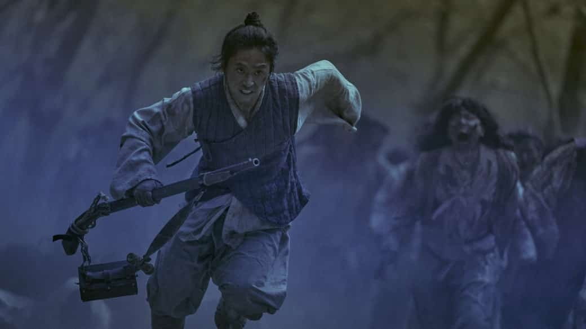
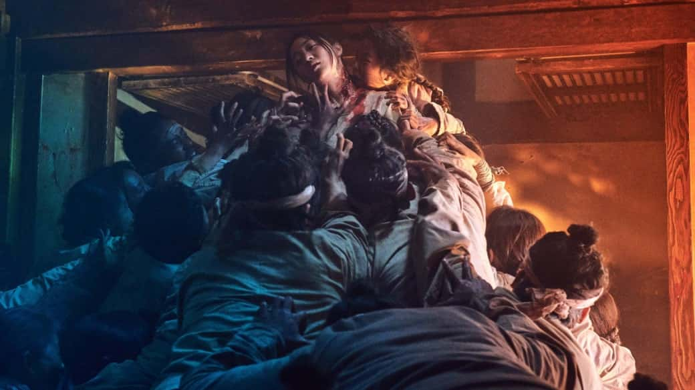

25 января 2019 года на Netflix состоялась премьера второго корейского сериала для стримингового сервиса — «Королевство» (Kingdom). Это история о борьбе за власть в средневековой Корее, разворачивающейся на фоне эпидемии, превращающей людей в живых мертвецов.
Ровно за три месяца до «Королевства» — 25 октября 2018 года — вышел корейский фильм «Прорыв» (Changgwol). Там был практически аналогичный сюжет с эпидемией на фоне политического конфликта между правящей династией в Корее и министром, желающим начать новую королевскую династию. Почему проекты получились так похожи? Ответ довольно очевиден: у них один режиссер — Ким Сон-хун.
А общего действительно немало:
- Зараженные бодрствуют только ночью, днем они «спят»;
- В обоих проектах есть министр, желающий прибрать к своим рукам власть;
- В обоих проектах принц не преследовал цель спасать простых людей, но вынужден был стать их лидером;
- Выжившие вынуждены готовиться к «осаде» зараженными в течение дня, чтобы пережить ночь; .
- Действие обоих проектов происходит в Чосоне — корейском государстве, существовавшем с 14 по 19 век.
Удивительно, конечно, что так много схожих элементов, ведь сценаристы-то у проектов разные. «Королевство» и вовсе основано на веб-комиксе The Kingdom of the Gods (Sinui nara), так что все эти общие черты выглядят несколько странно. Особенно если вспомнить о фильме «Монструм» (Mulgoe), вышедшем 12 сентября 2018 года, в котором тоже был такой сюжет, только вместо зомби было загадочное существо, терроризирующее Корею. Многие элементы, описанные выше, были и там. Так что, кто у кого украл идеи — хороший вопрос.
Но вернемся к «Королевству». Очевидно, понимая, что сериал будут сравнивать с «Прорывом», его создатели постарались сделать его отличающимся от своего аналога. И отчасти у них получилось — политическая линия в «Королевстве» гораздо интереснее, в ней участвует больше людей, а конфликт во власти не такой очевидный, как в «Прорыве».
Здесь наглядно демонстрируется невежество знати, закрывающей глаза на очевидную ложь ради собственной выгоды. Впрочем, министр в отличие от своего аналога в «Прорыве» более человечен. Его долгоиграющие планы рушатся из-за невозможности обуздать эпидемию, и он реагирует на это как любой человек — натуральными эмоциями, необдуманными решениями и импульсивным поведением. А ведь он, по сути, исполняет роль короля — ему всегда нужно быть сдержанным и спокойным, иначе он не сможет реализовать свои планы.
Такой же подход применим к каждому персонажу. Имея больше экранного времени, Ким Сон-хун смог углубиться в образы героев, добавить им глубины и даже несколько флэшбэков, раскрывающих характер принца. Это наглядное преимущество шестичасового формата «Королевства» перед «Прорывом», где всю историю нужно было уместить в два часа.
Поскольку эпидемия воскресших мертвецов здесь скорее метафора для любой внешней угрозы государству, и без того разрозненному внутренними распрями правительства и правящей династии, то углубление в характеры героев необходимо. Оно позволяет понять, действительно ли наследный принц тот человек, кто должен вести народ за собой, а министр — предатель, готовый пожертвовать всем ради власти.
В «Прорыве» все персонажи были максимально плоские — принц-повеса легко бросил свой эгоизм ради других, когда увидел эпидемию своими глазами, а министр наплевал на власть ради мести. В «Королевстве» же все сложнее, поэтому за интригами гораздо интереснее наблюдать.
Разумеется, из-за углубления в политическую часть сокращается количество времени, которое создатели сериала тратят на сражения с мертвецами. По ощущениям, в «Прорыве» схваток с воскресшими было больше, но там и эпидемия распространилась гораздо быстрее. «Королевство» позволяет себе выждать, чтобы под конец первого сезона (всего их будет два) представить подготовку к масштабному сражению — обороне целого города от армии живых мертвецов. Но произойдет это уже во втором сезоне, который на контрасте с первым будет больше про сражения, чем про интриги.
Несмотря на то, что в «Королевстве» шесть часов контента, он смотрится гораздо бодрее, чем двухчасовой «Прорыв». И это при том, что во многих элементах они похожи. Видимо, все дело в той проработке героев, о которой речь шла выше. Даже мелкие и, казалось бы, совершенно ненужные сцены, показывающие персонажей обычными людьми, работают на погружение в историю.
«Королевство» не воспринимается как очередной зомби-трэш, потому что у местных мертвецов есть четкие правила, по которым они существуют. Никто не пытается сделать суперзомби в рядах обычных или как-то выделить кого-то из зараженных на фоне других.
Это именно дикая сила, которую практически невозможно удержать. Зараженные из «Королевства» чем-то напомнили мне зомби из «28 дней спустя» — они бегают, реагируют на звуки, а весь смысл их существования в распространения заразы на других людей. Они даже не съедают целиком, оставляя жертву укушенной, чтобы она моментально обратилась и присоединилась к поиску тех, кто еще не заражен.
Видеть подобных мертвецов в декорациях средневековой Кореи крайне непривычно. Ведь большинство схем из зомби-фильмов не работает в таких условиях — персонажам преимущественно приходится сражаться в ближнем бою, что заметно меняет ставки и правила боя с мертвецами.
Если вы любите жанр фильмов и сериалов про зомби и устали от однообразных проектов, то «Королевство» развеет ваш разочарование и представит что-то новое. Столь качественных проектов на подобном уровне немного (речь и о костюмах, и о декорациях, и о постановке боевых сцен), поэтому всем любителям жанра обязательно к просмотру. И пусть вас не пугает политическая линия — она помогает погрузиться в эпоху, благодаря чему конфликт с ожившими мертвецами воспринимается на еще большем контрасте.